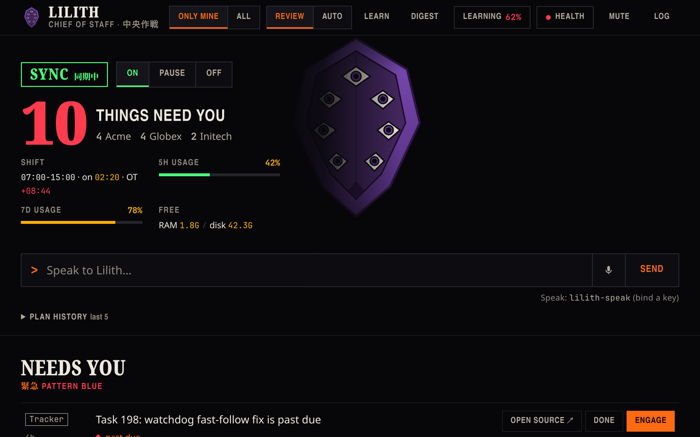
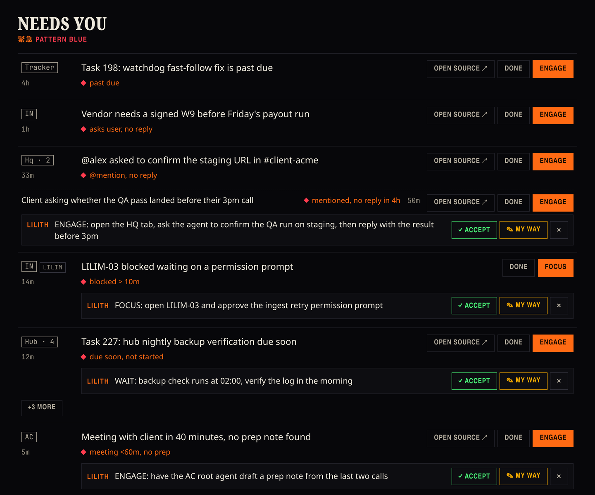
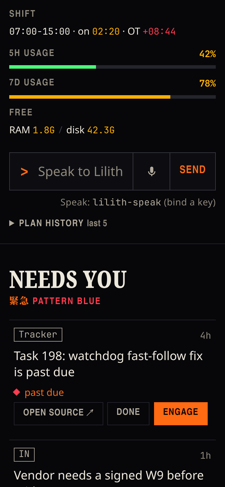
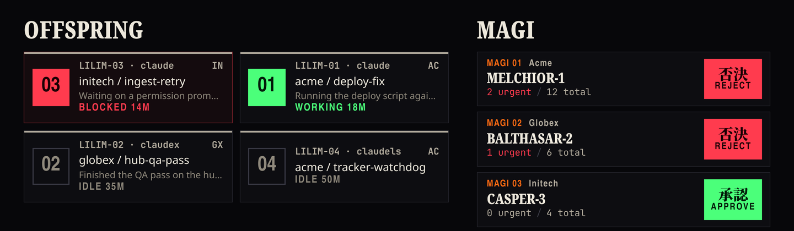

What needs me now?
Lilith watches your task board, chat, email, meeting notes, calendar and running Claude Code sessions, files every item under its client, and puts the things waiting on you at the top of one page.

The real interface, running on the demo data it ships with. The clients are fictional; nothing on this page came from a real inbox.
Six in, one outEverything lands on one page
Each source is polled with a saved cursor, so only new or changed items move on. One reader turns raw text into short structured notes. The rules and the page work only from those notes.
- Task boardtasks, due dates, reviews
- Chatmentions and threads
- Emailthreads waiting on you
- Meeting notescalls and action items
- Calendarwhat is coming up
- Claude Coderunning sessions
The reader
The only part that sees raw email and chat text. Every tool is switched off, so it can return notes and nothing else.
One page
Seven rules pick what needs you. Items with a due date come first, then the oldest, then by client.
No model in the loopSeven rules decide what needs you
The rules are plain code. They re-run on every cycle without asking a model, so the same inbox always gives the same list.
- R1
A mention you have not answered
Someone named you in a conversation and you have not replied since. A cc under an FYI heading does not count.
- R2
An email waiting on you
The last message is not yours, it asks something, and it names you or one of your addresses.
- R3
A task past due or stuck
Past its real due date, or sitting in review past the threshold. Dates a model guessed from task text do not count.
- R4
An action with your name on it
A status post lists you as the owner of an open item.
- R5
A meeting soon, no prep
A calendar event is coming up and there is no prep note for it.
- R6
A session waiting on you
A Claude Code session has been blocked on input past the threshold.
- R7
A tracker that reports a problem
The time tracker says it is unhealthy, or a status post has an open item for you about it.
Everything else waits
Items that match no rule stay in their client's tabs, out of the urgent list.
Needs you · 緊急Each item says why it is there
Every urgent item shows the rule that raised it, how old it is, and a suggested next step you can accept, change or dismiss.

Reason first
"Mentioned, no reply in 4h." "Blocked over 10 minutes." "Meeting in under an hour, no prep." The reason is the rule that fired, in words.
A suggested next step
Lilith proposes one move per item. Accept it, write your own, or dismiss it. Nothing runs until you choose.
Only mine, or all
A toggle hides team FYIs and posts that only cc you.

OffspringIt keeps an eye on your agents
Lilith lists the Claude Code sessions running in your terminals, shows which ones are working, idle or blocked, and can prompt one on your typed command.

承認 · approvalYou choose how much it does alone
Lilith's own actions are small: a popup, a memory note, a saved playbook. You decide whether they wait for you.
Review
Every action Lilith wants to take goes into a queue. You approve or reject each one.
- memory writes wait
- playbooks wait
- popups wait
Auto
Lilith runs its own small actions as they come up. You can read everything it did in the log.
- same rules, same page
- actions logged
- switch back any time
In both modes, prompting a terminal agent waits for your vote, and nothing is written to an outside service except optional alerts to your own direct messages.
ContainmentLocal, and kept small
Lilith runs as a service on your own machine and calls Claude Code for the reading. It holds no passwords of its own.
Off until you turn it on
The service starts with polling off. It begins only when you press On.
Your machine only
The page answers on the local machine alone, behind a one-time token that sets a cookie.
Each source keeps its own login
Chat, email, the task board and meeting notes use their own tools and your own credentials. No key lives in Lilith's config.
Two readers at most
At most two Claude Code reader processes run at once, at low CPU and disk priority, capped at 1.5 GB of memory.
Memory per client
Each client and sub-client has its own brief, kept on your disk. Backups are optional and off by default.
CountedThe numbers
Counted from the code, and from a run of its test suite.
- 6
- sources watched
- 7
- rules for "needs me now", none of them a model
- 0
- tools for the reader that sees raw text
- 2
- reader processes at most, capped at 1.5 GB
- 545
- automated tests
SetupWhat it needs
Lilith is a personal tool built for one Linux laptop. Expect to adapt it. A coding agent can do most of the setup.
- Linux with systemdIt runs as a user service. The bar badge and theme are optional extras for one desktop.
- Node.js 26 or laterIt runs its sources directly, with no build step.
- Claude Code, logged inYour own account. Lilith calls it as its only reader of raw text.
- The sources you wantEach with your own login: chat and email tools, a task board client, meeting notes and calendar connectors. Any of them can stay off.
- Two config filesYour names and sources, and your clients with the words that identify them.
Source available on request.
Set up with your AI agent
Paste one prompt into Claude Code. It checks your machine, runs the tests, shows you the install plan before doing it, and helps you fill in the two config files.
› check Linux, systemd, Node, Claude Code › run the test suite › show the install plan, then install › fill in your sources and clients with you › start the service, polling still off
Q&AQuestions
Does it reply to people for me?
No. It suggests a next step. Sending stays with you, in the tool you would use anyway. The only thing it sends is an optional alert to your own direct messages.
Why is a model reading my email at all?
To turn a long thread into a short note: who it is from, what it asks, whether it is about you. That reader has every tool switched off, so the text it reads cannot make it do anything.
What if a source is down?
The health panel shows each source's status, and the page keeps working from the others.
Does it work on macOS or Windows?
It was built for one Linux laptop with systemd. The core is Node.js, so it can be adapted, but that is work you would do.
Where does the 545 come from?
A run of its test suite. The other numbers on this page are counted from the code and its config.